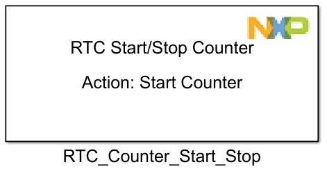
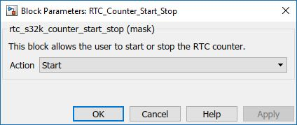

RTC Start Stop Counter Block
This block allows the user to start or stop the counter for LPTMR module.
Block Image
Inputs:
- None
Outputs:
- None
Parameters and Dialog Box
Action
Chooses the action type: Start or Stop.
Block Dependency
Block Miscellaneous Details
- None